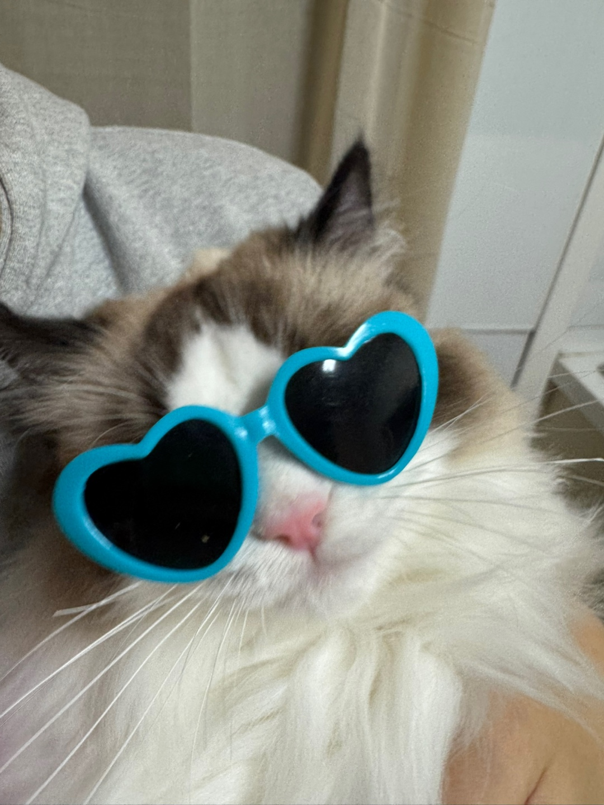

object-fit속성을 사용하여 img태그나 video태그 두종류의 태그에 대해 원본 가로세로 비율을 해치지 않는 범위안에서 사이즈를 조절할 수 있다.(cover/contain)
이미지나 영상의 크기를 조절할 때 절대 짤리지 않는 선에서 크기를 최대한 맞추는 방식
object-fit:contain 은 가로세로 사이즈가 지정되어 있는 경우에서 사용가능하다.
이미지 영상의 크기가 잘리더라도 지정한 가로와 세로사이즈를 무조건 가득 채우는 방식